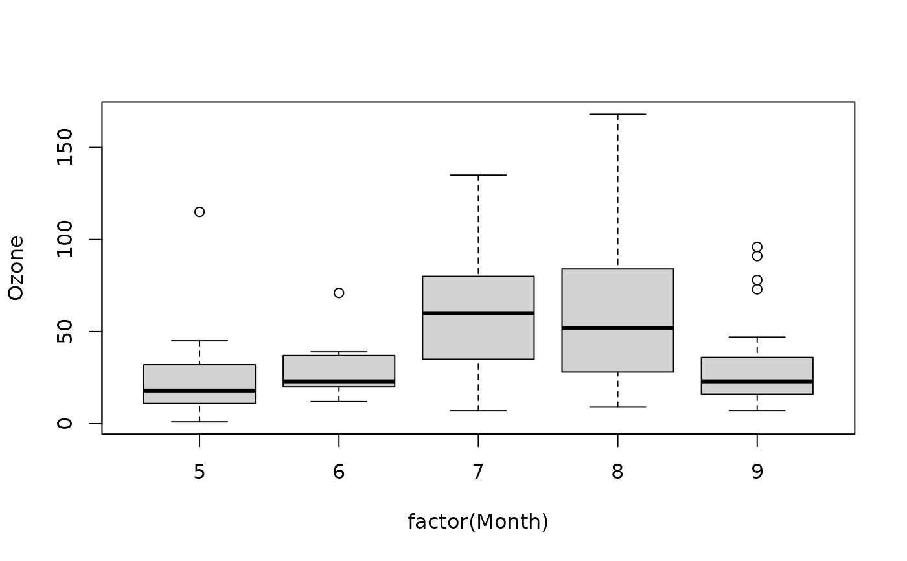

Van Der Waerden Test for Comparing Group Locations Using Normal Scores
Source:R/vanWaerdenTest.R
vanWaerdenTest.RdA nonparametric k-sample test based on normal scores (van der Waerden scores), serving as an alternative to the one-way ANOVA. It is more efficient than the Kruskal-Wallis test when the underlying data are approximately normally distributed.
Usage
vanWaerdenTest(x, ...)
# S3 method for class 'formula'
vanWaerdenTest(formula, data, subset, na.action, ...)
# Default S3 method
vanWaerdenTest(x, g, ...)Arguments
- x
a numeric vector of data values, or a list of numeric data vectors. Non-numeric elements of a list will be coerced, with a warning.
- ...
further arguments to be passed to or from methods.
- formula
a formula of the form
response ~ groupwhereresponsegives the data values andgroupa vector or factor of the corresponding groups.- data
an optional matrix or data frame (or similar: see
model.frame) containing the variables in the formulaformula. By default the variables are taken fromenvironment(formula).- subset
an optional vector specifying a subset of observations to be used.
- na.action
a function which indicates what should happen when the data contain
NAs. Defaults togetOption("na.action").- g
a vector or factor object giving the group for the corresponding elements of
x. Ignored with a warning ifxis a list.
Value
A list with class "htest" containing the following
components:
- statistic
the van der Waerden statistic.
- parameter
the degrees of freedom of the approximate chi-squared distribution of the test statistic.
- p.value
the p-value of the test.
- method
the character string
"Van-der-Waerden normal scores test".- data.name
a character string giving the names of the data.
Details
Performs a van der Waerden normal scores test.
vanWaerdenTest performs a van der Waerden test of the null that the
location parameters of the distribution of x are the same in each
group (sample). The alternative is that they differ in at least one.
The van der Waerden rank scores are defined as the ranks of data, i.e.,
\(R[i], i = 1, 2, ..., n\), divided by \(1 + n\) transformed to a normal
score by applying the inverse of the normal distribution function, i.e.,
\(\Phi^(-1)(R[i]/(1 + n))\). The ranks of data are obtained by ordering
the observations from all groups (the same way as kruskal.test()
does it).
If x is a list, its elements are taken as the samples to be compared,
and hence have to be numeric data vectors. In this case, g is
ignored, and one can simply use vanWaerdenTest(x) to perform the
test. If the samples are not yet contained in a list, use
vanWaerdenTest(list(x, ...)).
Otherwise, x must be a numeric data vector, and g must be a
vector or factor object of the same length as x giving the group for
the corresponding elements of x.
References
Conover, W. J., Iman, R. L. (1979). On multiple-comparisons procedures, Tech. Rep. LA-7677-MS, Los Alamos Scientific Laboratory.
Conover, W. J. (1999). Practical Nonparametric Statistics (Third Edition ed.). Wiley. pp. 396–406.
See also
normal_test in package coin,
where the test is implemented in a more general context.
Other test.location:
brunnerMunzelTest(),
hotellingsT2Test(),
moodMedianTest(),
signTest(),
tTestA(),
yuenTTest(),
zTest()
Examples
## Hollander & Wolfe (1973), 116.
## Mucociliary efficiency from the rate of removal of dust in normal
## subjects, subjects with obstructive airway disease, and subjects
## with asbestosis.
x <- c(2.9, 3.0, 2.5, 2.6, 3.2) # normal subjects
y <- c(3.8, 2.7, 4.0, 2.4) # with obstructive airway disease
z <- c(2.8, 3.4, 3.7, 2.2, 2.0) # with asbestosis
vanWaerdenTest(list(x, y, z))
#>
#> Van-der-Waerden normal scores test
#>
#> data: x
#> Van-der-Waerden chi-squared = 1.2014, df = 2, p-value = 0.5484
#>
## Equivalently,
x <- c(x, y, z)
g <- factor(rep(1:3, c(5, 4, 5)),
labels = c("Normal subjects",
"Subjects with obstructive airway disease",
"Subjects with asbestosis"))
vanWaerdenTest(x, g)
#>
#> Van-der-Waerden normal scores test
#>
#> data: x and g
#> Van-der-Waerden chi-squared = 1.2014, df = 2, p-value = 0.5484
#>
## Formula interface.
require(graphics)
boxplot(Ozone ~ factor(Month), data = airquality)

vanWaerdenTest(Ozone ~ factor(Month), data = airquality)
#>
#> Van-der-Waerden normal scores test
#>
#> data: Ozone ~ factor(Month)
#> Van-der-Waerden chi-squared = 27.632, df = 4, p-value = 1.481e-05
#>